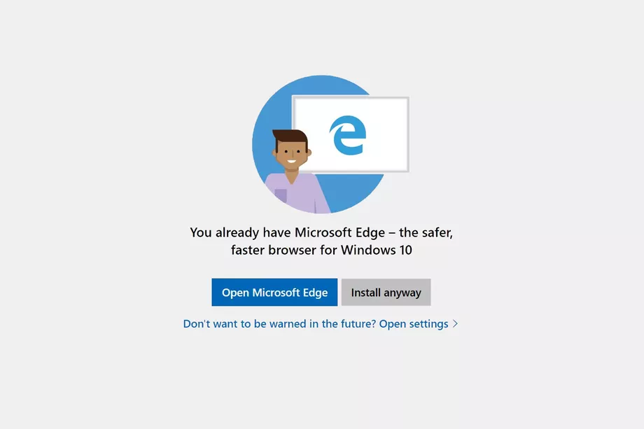

Friendly reminder: Microsoft still sucks
Continuing the series of “Microsoft sucks” rants.
Windows 10 update bullshit
Windows 10 just updated itself, and once again restarted my computer without asking for permission. I thought I disabled the automatic restarting, (which even requires pro version because, well, M$FT decided home users don’t deserve autonomy even for advanced users through registry tweaks) but apparently it takes more than the skills of a software engineer to be able to disable the forced mechanism.
Broken things after automatic update
After above mentioned restart, various things broke:
-
Language bar came back (I hid it before), and apparently there’s a keyboard shortcut that I’m accidentally triggering to change keyboard layout. It was very frustrating to troubleshoot why all of a sudden my layout keeps changing at seemingly random intervals when I’m hacking away at code just like every other day.
-
Headphones stopped working, I had to unplug them and plug them back in.
-
Second monitor orientation reset to landscape, so the picture is now rotated. I had just gotten used to the fact that each time I power on the monitors I’ve to re-size and move the windows because for some unknown reason they get smaller and moved to primary monitor’s top-left. And now this??!
-
“Open command prompt here” went missing, which I had previously enabled with a registry tweak. Microsoft seems to be pushing hard “powers hell” as a command prompt -replacement, since they don’t want to respect my choice of using command prompt to run the occasional command.
Microsoft deliberately makes it hard to take atomic backups with non-server versions
See this comment of mine.
This is especially evil, considering that you can’t trust Windows’ built-in backup tools as Microsoft has a track record of changing the backup tool every time a new Windows version comes out. I don’t have time to learn the new tool every time a new Windows version comes out, so I want to use a third party tool which I have to learn only once.
Above mentioned tricks make it harder for third parties to make good backup tools, when Microsoft tries to limit different versions of Windows to use different commands for taking good quality (= atomic) backups.
Microsoft using their power to try to talk you out of installing alternative browsers

Microsoft tested a feature where they actively tried to talk you out of installing a better browser.
Windows 10 update accidentally deletes files
Apparently this also happened to a bunch of people. Wow.

Thanks for reading! 😍
If you like my writing, consider following me on Twitter.
Stay updated on my blog posts & projects - sign up for
my newsletter. 🚀
No spam, unsubscribe any time.
RSS also available.